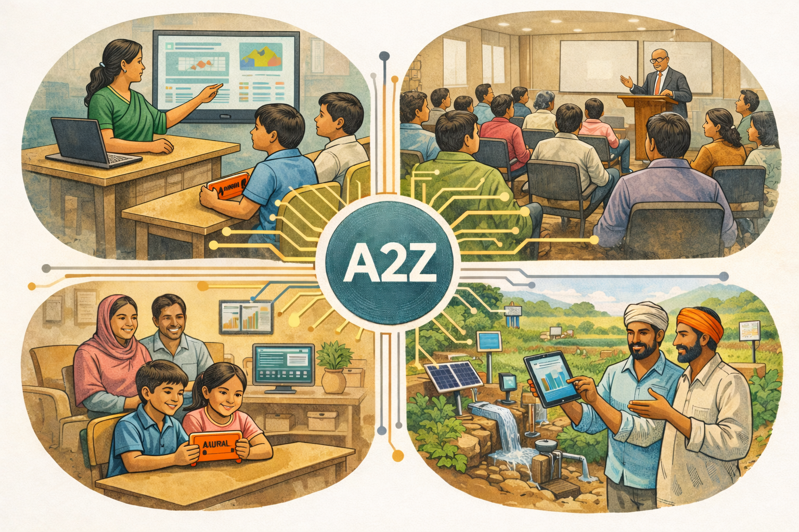

Empowering Communities.
Building Resilience.
Education
Explore Aural and offline-first learning.
Water Management
Equitable water access & security.
Antifragility
The core philosophy building resilient systems.